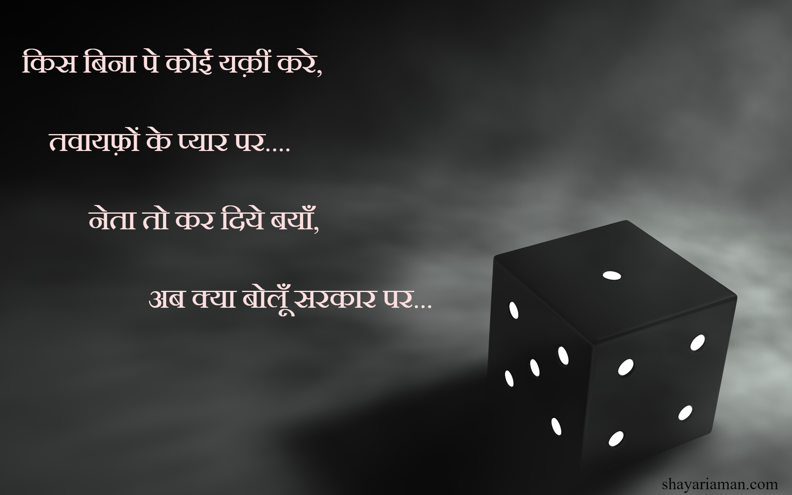

~~~Latest shayari~~~
कैसी रिवाज है ख़ुदा, तेरे इस जहान की।
धँधा करे ताजिर, और बदनामी दुकान की।

Kaisi riwaz hai khuda, tere is jahaan ki.
dhandha kare tazir or badnaami dukaan ki.
क्या औक़ात इन्सान की, वक़्त की स़ितम ज़रिफी मे।
गंगा का पानी पीकर भी, वो मल्लाह जीये ग़रीबी मे।
Kya ookaat insaan ki waqt ki sitam jarifi main.
ganga ka paani pikar bhi, wo malah jiye garibi main.
तुम्हारे बग़ैर, मेरी हर शाम निराली होती है।
ख़्यालों की महफ़िल में, सिर्फ़ बेख्याली होती है
Tumhare bagair meri har sham nirali hoti hai.
khayalon ki mahifil main sirf, bekhayali hoti hai.
दिल तेरे दीदार को, जब-जब मुंतज़ीर होता है।
झूठा ही सही पर, अहसास बे नज़ीर होता है ।
Dil tere deedar ko jab-jab mintjir hota hai.
jhoota hi sahi par ahsaas benazir hota hai.
छोड़कर आँधी की चपेट में, छोटे से आशियान को।
सुकून कैसे मिल जाता है, इस दिल के बाग़वान को।
Chodkar aandhi ki chapet main chote se aasiyan ko,
sukoon kaise mil jaata hai, is dil ke bagwaan ko.
लोग बेताब थे मिलने को, मंदिर के पुजारी से।
हम दुआ लेकर आ गये, बाहर बैठे भिखारी से।

Log betab the milne ko, mandir ke poojari se,
hum dua lekar aagaye, bahae baithe bikhari se.
किस बिना पे कोई यक़ीं करे, तवायफ़ों के प्यार पर।
नेता तो कर दिये बयाँ, अब क्या बोलूँ सरकार पर।
Kis bina par koi yakin kare, tawayfon ke pyar par.
neta to kar diye bayan, ab kya bolun sarkar par.
मिलती है सियासत गद्दी, कोई ख़ास जनाब नवाबी को ।
अता नहीं करता वो केसर, हर हिरण की नाभी को।
Milti hai siyasat gaddi koi khaas janab nawabi ko.
aata nahi karta wo kesar har hiran ki nabhi ko.
जब - जब सनम हमसे दूर होता है।
लफ़्ज़ों मे दर्द और क़लम में नूर होता है ।
Jab-jab sanam humse door hota hai,
lafjon main dard or kalam main noor hota hai.
इतना सा अहसान ए काग़ज़, अपने आका पर कर देना ।
जब वो मिले हमसे, जुबां को लफ़्ज़ों से भर देना।
Itna sa ahsaan a kagaj apne aaka par kar dena,
jab wo mile humse, jubaan ko lafjon se bhar dena.
कातिल नहीं ज़माने में, मेरे यार की तरह।
खामोशियाँ भी काम में लि, तलवार की तरह ।
Katil nahi jamane main mere yaar ki tarah
khamosiyan bhi kaam main li, talvaar ki tarah.
कोई और गवारा नहीं, तुम्हें आया देख कर।
किसी दिन उलझ पड़ेगें, अपना साया देख कर।
koi or gavara nahi, tumhe aaya dekhkar.
kisi din oolajh padenge apna saya dekh kar.
शीशे की ज़िद थी, दर्पण बनना ।
फिर क्यों बुरा लगे, एक तरफ़ से बदलना।
Sishe ki zid thi darpan ban jana.
fir kyon bura lage ek taraf se badlna.
एक काँच के टुकड़ों में, फ़र्क़ कितना बन गया।
एक हसिना का आइना, दूसरा शराबी की मीना बन गया।
Ek kaanch ke tukdon main fark kitna ban gaya.
ek hasina ka aaina, doosra sarabi ki mina ban gaya.
गीले- शिकवे सारे, अदम में रख देते।
राह ए मुहोब्बत का हिसाब, क़दम में रख देते।
मेरे ख़त का जवाब तो देते जनाब,
कलेजा निकाल कर, क़लम में रख देते।
Gile sikwe sare adam main rakh dete,
rah e muhobbat ka hisab kadam main rakh dete.
Mere khat ka jawab to dete janab,
kaleja nikaal ke kalam main rakh dete.
देख कर उनकी बेरुख़ी, कुछ तो सुधर जा ।
ए मेरे मुहोब्बत के जाम, अब तो उतर जा ।
Dekh kar unki berookhi, kuch to sudhar ja.
a mere muhobbat ke jaam ab to utar ja.
नहीं बिके हम जीवन भर, क़िमत के ख़रिदों से।
पल भर में निलाम हो गए, मुहोब्बत के मुरिदों से।
Nahi bike hum jiwan bhar, kimat ke kharidon se.
pal bhar main nilaam ho gaye, muhobbat ke muridon se.
~~~Romantic shayari~~~
नहीं बिके हम जीवन भर, क़िमत के ख़रिदों से।
पल भर में निलाम हो गए, मुहोब्बत के मुरिदों से।
Nahi bike hum jiwan bhar,kimat ke kharidon se.
pal bhar main nilam ho gaye, muhobbat ke muridon se.
गुलशन ए गुलज़ार का, हर ग़ुलदान तुम्हारा है।
हर शाख़ ए गुल पर, इक अहसान तुम्हारा है।
Gulsan e gulzaar ka har guldaan tumhara hai.
Har sakh e gul par ek ehsaan tumhara hai.
तराशा जिस्म तराश ने, इस क़द्र सरताज़ को।
भूल जाये एक पल को, साजिन्दा अपने साज को।

Tarasa jisam taras ne is kadar sartaj ko.
bhool jaye ek pal ko,sajinda apne saaz ko.
छोड़कर आँधी की चपेट में, छोटे से आशियान को।
सुकून कैसे मिल जाता है, इस दिल के बाग़वान को।
Chod kar aandhi ki chapet main, chote se aasiyan ko.
sukoon kaise mil jata hai, is dil ke bagwaan ko.
कोई और गवारा नहीं, तुम्हें आया देख कर।
किसी दिन उलझ पड़ेगें, अपना साया देख कर।
Koi or gawara nahi tumhe aaya dekh kar.
kisi din ulagh padenge apna saya dekh kar.
जो लफ़्ज आपकी जुबां में होते है,
उनके दर्ज़े, और कहाँ होते है ?
Jo lafaj aapki jubaan main hote hai,
unke darje or kanha hote hai.
माना तेरे सजदे में, बहुतों नें सर झुकाया है।
पर ये मत भुलना, मैंने तुम्हें अपना ख़ुदा बनाया।
Mana tere sazde main bahuton ne sar jhukaya hai.
par ye mat bhoolna, ki maine tumhe apna khuda banaya hai.
लफ़्ज बोलते है जुबां की भाषा, मदहोस ख़्यालातों में।
फिर जुबां क्यों नहीं निभाती फ़र्ज़, हसीं मुलाक़ातों में!
Lafaj bolte hai jubaan ki bhasa, madhoos khayalaton main.
fir jubaan kyon nahi nibhati farz, hasin mulakatin main.
ये लफ़्ज़ भी कुछ- कुछ तुम्हारी तरह है।
इन्हें याद नहीं रखना पड़ता ।
Ye lafaj bhi kuch-kuch tumhari tarah hai.
inhe yaad nahi rakhna padta.
नूर है, फ़िज़ा है, ख़ुशरंग सी बहार है।
ये तुम आ रहे हो या मौसम का ख़ुमार है ।
Noor hai, fiza hai, khoosh rang si bahar hai.
ye tum aarahe ho yaa mausam ka khoomar hai.
मेरे दिलदार की ख़ामोशीयाँ, हरदम पास रहती है।
हम मीर नहीं फ़क़ीर है, जिनकी ग़ज़ल उदास रहती है।
Mere dildaar ki khamosiyan, har dam paas rahti hai.
hum meer nahi fakeer hai, jinki gazal udaas rahti.
इश्क़ के मौसमों का, कोई ज़माना नहीं होता ।
ये बारिश उलफ़त की है जनाब, यहाँ पैमाना नहीं होता।
Ishq ke mausamon ka koi jamana nahi hota.
ye baris ulfat ki hai janab,yanha paimana nahi hota.
ये दिलों की धड़कन, ये आँखों की फड़कन ।
कोई मुहोब्बत का कारवाँ है या, मौसमों की अड़चन।
Ye dilon ki dhadkan, ye aankhon ki fadkan.
koi muhobbat ka karawan hai yaa mausamon ki adchan.
तुमने मुहोब्बत सिखी होगी, उलफ़त के अख़बारों से।
क्या होगा जब मिलोगी तुम, हम ज़ालिम पत्रकारों से।
Tumne muhobbat sikhi hogi, ulfat ke alhbaron se.
kya hoga jab milogi tum, un zalim patarkaron se.
इस पाक़िजा से नाते को, मुहब्बत का नाम ना दे,
लोग सब़ब ढुंढ़ते है, बदनाम करने का ।
Is pakiza se nate ko muhobbat ka naam na de.
log sabab dhundhte hai badnaam karne ka.
~~~Best ever shayari~~~
आज मेरी क़लम, मुझ पर मेहरबान हुई है ।
जो बात होंठ नहीं कह पाये, लफ़्ज़ों से बयान हुई है.
Aaj meri kalam mujh par maharbaan hui hai,
jo baat hoth nahi kah paai, lafjon se bayan hui hai.
तराशा जिस्म तराश ने, इस क़द्र सरताज़ को।
भूल जाये एक पल को, साजिन्दा अपने साज को।
Tarasa jisam taraas ne is qudar sartaj ko,
bhool jaye ek pal ko, sazinda apne saaj ko.
स़राफत की कसमकस मे, भिड़ गये आगों से।
महफ़िल की श़मां तेज़ निकली, मंदिर के चिराग़ों से।
Sarafat ki kasamkas main, bhid gaye aagon se.
mahfil ki sama tej nikli, mandir ke chiragon se.
किस बिना पे कोई यक़ीं करे, तवायफ़ों के प्यार पर। नेता तो कर दिये बयाँ, अब क्या बोलूँ सरकार पर।
Kis bina par koi yakin kare, tawayfon ke pyar par.
neta to kar diye bayan, ab kya bolun sarkar par.
जब से आया है पेपर वेट,काग़ज़ी बाज़ारों में।
लफ़्ज़ों का प्रयोग कम सा हुआ, वज़नदार औज़ारों में।
Jab se aaya hai paper weight, kagji bazaron main.
lafjon ka pryog kam sa hua, wajandaar aujaron main.
लफ़्ज बोलते है जुबां की भाषा, मदहोस ख़्यालातों में।
फिर जुबां क्यों नहीं निभाती फ़र्ज़, हसीं मुलाक़ातों में!
Lafj bolte hai juban ki bhasa, madhos khayalaton main.
fir jubaan kyon nahi nibhati farz, hasin mulakaaton main.
मिलती है सियासत गद्दी, कोई ख़ास जनाब नवाबी को ।
अता नहीं करता वो केसर, हर हिरण की नाभी को।
Milti hai siyasat gaddi koi khaas janab nawabi ko.
aata nahi karta wo kesar har hiran ki nabhi ko.
उनके प्यार की तारीफ़,इस क़दर हुई।
हमें छोड़ कर, पूरे शहर को ख़बर हुई ।
Unke pyar ki tarif is qudar hui.
hume chodkar poore sahar ko khabar hui.
ये लफ़्ज़ों की भाषा भी अजीब होती है ।
उलझा देती है समझाकर।

Ye lafjon ki bhasa bhi azeeb hoti hai.
uljha deti hai samjhakar.
देख कर उनकी बेरुख़ी, कुछ तो सुधर जा ।
ए मेरे मुहोब्बत के जाम, अब तो उतर जा ।
Dekh kar unki berukhi, kuch to sudhar ja.
a mere muhobbat ke jaam, ab to utar ja.
कैसी रिवाज है ख़ुदा, तेरे इस जहान की।
धँधा करे ताजिर, और बदनामी दुकान की।
Kaisi riwaz hai khuda, tere is zahan ki.
dhandha kare tazir, or badnaami dukaan ki.
लोग बेताब थे मिलने को, मंदिर के पुजारी से।
हम दुआ लेकर आ गये, बाहर बैठे भिखारी से।
Log betab the milne ko, mandir ke poojari se,
hum dua lekar aagaye, bahae baithe bikhari se.
बहुत सताया बहुत रुलाया, मुहोब्बत के वक़ीलो ने।
केस हराकर दिल जीत लिया; मेरे यार की दलीलों नें।
Bahut sataya bahut rulaya, muhobbat ke vakilon se.
case harakar dil jeet liya, mere yaar ki dalilon ne.
वो काग़ज़ कभी फड़फड़ाते नहीं,
जिनके लफ़्ज़ों में वज़न होता है।
Wo kagaz kabhi fadfadate nahi,
jinke lafjon main wajan hota.
~~~Dua shayari~~~
मेरी दुआ का फ़ख़्त इतना असर हो ।
तेरी दुआ सुनने को, ख़ुदा हर व़क्त्त मय्यसर हो।
Meri dua ka faqt itna asar ho,
teri dua sunne ko khuda har waqt maysar ho.
इस नाचीज़ पर, इतना सा फ़ज़ल हो जाये।
मैं उसकी तारीफ़ करूँ, और ग़ज़ल हो जाये।
Is nacheez par itna sa fazal ho jaye.
main uski tarif karun or gazal ho jaye.
माना तेरे सजदे में, बहुतों नें सर झुकाया है।
पर ये मत भुलना, मैंने तुम्हें अपना ख़ुदा बनाया।
Mana tere sazde main bahuton ne sar jhukaya hai.
par ye mat bhoolna, maine tumhe apna khuda banaya hai.
मुक्त़सर सी मुलाक़ात, मुकम्मल हो जाये ।
वो छोड़कर जाये, उससे पहले अजल हो जाये।
Muktsar si mulaakat mukamal ho jaye.
wo chod kar jaye us se pahle azal ho jaye.
ख़ुदा करे मैं इस क़ाबिल हो जाऊँ ।
दुआ तूँ करे और मैं शामिल हो जाऊँ ।
Khuda kare main is kabil ho jaoon,
dua tun kare or main samil ho jaoon.
राह ए मुहोब्बत दुसवार नहीं होती।
बस हमराहों की मंज़िलें एक होनी चाहिए
Raah e muhobbat duswaar nahi hoti,
bus humrahon ki manzilen ek honi chahiye.
राह ए मुहोब्बत, कुछ यूँ बसर हो जाये।
जो जिसे चाहे, वही हमसफ़र हो जाये।
Rah e muhobbat kuch yun basar ho jaye,
jo jise chahe wahi humsafar ho jaye.
आलम ए बेचारगी में, निगाह ए कर्म चाहिए।
जो लिखे फ़ख़्त ख़ुशी हमारी, ऐसी क़लम चाहिए।
Aalam e bechargi main, nigah e karam chahiye,
jo likhe faqt khusi humari, aisi kalam chahiye.
आलम ए बेताज़गी है, दीदार का चारा चाहिए ।
इस बिख़रे अहल-ए-चमन को, गुलज़ार दुबारा चाहिए।
Aalam e bechargi hai, deedar ka chara chahiye.
is bikhre ahale chaman ko gulzaar doobara chahiye.
~~~Sad shayari~~~
मेरे गाँव का मौसम, बड़ा अजीब है।
जेठ है मेहरबाँ, और सावन ग़रीब है ।
Mere gavn ka mausam bada ajeeb hai.
jeth hai mahrban or sawan gareeb hai.
तक़दीर की लकीर में पाया था, मुहोब्बत का मँजर।
कमबख़्त ने लकीर ही बदल डाली, इस क़दर चलाया खँज़र।
Taqdeer ki lakeer main paya tha muhobbat ka manzar.
kambakhat ne kakeer hi badal daali, is qudar chalaya khanjar.
तेरे शहर को हुआ क्या, घिर गया हुँ ख़तरों से।
यहाँ तो दिल परखे जाते है, हुस्न की नज़रों से।
Tere sahar ko hua kya, ghir gaya hun khatron se.
yanha to dil parkhe jate hai, husan ki nazron se.
कुछ जनाज़े दिल से निकले, कुछ निकले घरों से,
घरों वाले दुनिया से बाहर, और दिल वाले ख़तरों से।
Kuch janaze dil se nikle, kuch nikle gharon se.
ghar wale duniya se bahar, dil wale kharon se.
ये शायरी ही निभायेगी मेरा साथ ज़िंदगी भर,
वक़्त के साथ ल़फ्ज, मतलब जो नहीं बदलते।
Ye shayari hi nibhayegi mera sath jindgi bhar,
waqt ke sath lafaj, matlab jo nahi badlte.
गीले- शिकवे सारे, अदम में रख देते।
राह ए मुहोब्बत का हिसाब, क़दम में रख देते।
मेरे ख़त का जवाब तो देते जनाब,
कलेजा निकाल कर, क़लम में रख देते।
Gile sikwe saare, adam main rakh dete.
rah e muhobbat ka hisab, kadam main rakh dete,
mere khat ka jawab to dete janab.
kaleja nikal ke kadam main rakh dete.
अँजाम ए मुहोब्बत, किस क़दर कहूँ,
अल्फ़ाज़ दर्द माँगते है, और क़लम लहू ।
Anjam e muhobbat kis kadar kahun.
alfaaj dard mangte hai, or kalam lahu.
हम तो रूसवा हो गए, दिल अपना तुड़वाकर।
और वो पा गए पाकिज़गी, बस एक निकाह पढ़वाकर।
Hum to ruswa ho gaye, dil apna tudwakar,
or wo paa gaye paakizgi, bus ek nikaah padhwaakar.
तारों को दर्द होता है धुन देकर,
और लोग कहते है, साजिन्दा साज बजाता है ।
Taron ko dar hota hai dhun dekar
or log kahte hai ki sajinda saaj bajata hai.
खँजरों से मिटवाई थी, हाथों की लकीर को।
कैसे दोषी ठहराऊँ अब, मुंसिफ़ ए तक़दीर को।
Khanjron se mitwai thi, haton ki laqeer ko.
kaise dosi thahraaoon ab, munsif e taqdeer ko.
तुम्हें तुम्हारे पिया, हमें दास्ताँ ए ग़म मुबारक।
कात़िल हमारी दुनिया के, तुम्हे दूसरा जन्म मुबारक ।
Tumhe tumhare piya, hume dastan e gum mubaarak.
katil humari duniya ke, tumhe dusra janam mubarak.
कौन किसी पर रहम खाता है जनाब।
लोग तो बुझते चिराग़ों की भी क़सम खा लेते है।

Kon kisi par raham khata hai janab.
log to bujhte chiragon ki bhi kasam kha lete hai.
शायरी का मतलब किसी को समझ आये न आये,
पर मतलब की शायरी सबको समझ आती है ।
Shayari ka matlab kisi ko samajh aaye na aaye.
par matlab ki shayari sabko samajh aati hai.
अल्फाज़ों के पेट को, जवानियाँ खिलानी पड़ती है।
क़लम रूपी तलवार से, जिन्दगानियाँ मिटानी पड़ती है ।
Alfajon ke pet ko jawaniyan khilani padti hai.
kalam roopi talvar se jindganiyan mitani padti hai.
सिर्फ़ क़लम रखने से कुछ नहीं होता जनाब,
चलन भी बिगाड़ना पड़ता है, लफ़्जों की ज़ुस्तजु में !
Sirf kalam rakhne se kuch nahi hota janab.
chalan bhi bigadna padta hai.
आलम ए बेचारगी में, निगाह ए कर्म चाहिए।
जो लिखे फ़ख़्त ख़ुशी हमारी, ऐसी क़लम चाहिए।
Aalam e betajgi main, nigah e karam chahiye.
jo likhe faqt khusi humari, aisi kalam chahiye
हर शाख़ ए गुल पर, फुलों का आशियाँ नहीं होता।
होगी बेरुख़ी मौसम की, बेज़ार बाग़वाँ नहीं होता है।
Har saakh e gul par, fuloon ka aasiyan nahi hota.
hogi berukhi mausam ki, bezar bagwaan nahi hota.
शीशे की ज़िद थी, दर्पण बनना ।
फिर क्यों बुरा लगे, एक तरफ़ से बदलना।
Shishe ki zid thi darpan ban na.
fir kyon bura lage ek taraf se badlna.
कातिल नहीं ज़माने में, मेरे यार की तरह।
खामोशियाँ भी काम में लि, तलवार की तरह ।
Katil nahi jamane main mere yaar ki tarah.
khamosiyan bhi kaam main li talvar ki tarah.
इस पाक़िजा से नाते को, मुहब्बत का नाम ना दे,
लोग सब़ब ढुंढ़ते है, बदनाम करने का ।
Is pakiza se naate ko muhobbat ka naam na de.
log sabab dhundhte hai badnaam karne ka.
यूँ ही बदनाम हुआ श़ाकी, बैठकर महख़ाने में,
क़ुसूरवार तो मीना थी,लबों तक पहुँचाने में।
Yun hi badnaam hua saki, baith kar mahkhaane main.
kusurwaar to wo mina thi, labon tak pahunchane main.
छोड़कर आँधी की चपेट में, छोटे से आशियान को।
सुकून कैसे मिल जाता है, इस दिल के बाग़वान को।
Chodkar aandhi ki chapet main chote se aasiyan ko.
sukoon kaise mil jata hai is dil ke bagwaan ko.
~~~Dil shayari~~~
नहीं बिके हम जीवन भर, क़िमत के ख़रिदों से।
पल भर में निलाम हो गए, मुहोब्बत के मुरिदों से।
Nahi bike hum jiwan bhar,kimat ke kharidon se.
pal bhar main nilam ho gaye, muhobbat ke muridon se.
गुलशन ए गुलज़ार का, हर ग़ुलदान तुम्हारा है।
हर शाख़ ए गुल पर, इक अहसान तुम्हारा है।
Gulsan e gulzaar ka har guldaan tumhara hai.
Har sakh e gul par ek ehsaan tumhara hai.
तराशा जिस्म तराश ने, इस क़द्र सरताज़ को।
भूल जाये एक पल को, साजिन्दा अपने साज को।
Tarasa jisam taras ne is kadar sartaj ko.
bhool jaye ek pal ko,sajinda apne saaz ko.
छोड़कर आँधी की चपेट में, छोटे से आशियान को।
सुकून कैसे मिल जाता है, इस दिल के बाग़वान को।
Chod kar aandhi ki chapet main, chote se aasiyan ko.
sukoon kaise mil jata hai, is dil ke bagwaan ko.
कोई और गवारा नहीं, तुम्हें आया देख कर।
किसी दिन उलझ पड़ेगें, अपना साया देख कर।
Koi or gawara nahi tumhe aaya dekh kar.
kisi din ulagh padenge apna saya dekh kar.
जो लफ़्ज आपकी जुबां में होते है,
उनके दर्ज़े, और कहाँ होते है ?
Jo lafaj aapki jubaan main hote hai,
unke darje or kanha hote hai.
माना तेरे सजदे में, बहुतों नें सर झुकाया है।
पर ये मत भुलना, मैंने तुम्हें अपना ख़ुदा बनाया।
Mana tere sazde main bahuton ne sar jhukaya hai.
par ye mat bhoolna, ki maine tumhe apna khuda banaya hai.
लफ़्ज बोलते है जुबां की भाषा, मदहोस ख़्यालातों में।
फिर जुबां क्यों नहीं निभाती फ़र्ज़, हसीं मुलाक़ातों में!
Lafaj bolte hai jubaan ki bhasa, madhoos khayalaton main.
fir jubaan kyon nahi nibhati farz, hasin mulakatin main.
ये लफ़्ज़ भी कुछ- कुछ तुम्हारी तरह है।
इन्हें याद नहीं रखना पड़ता ।
Ye lafaj bhi kuch-kuch tumhari tarah hai.
inhe yaad nahi rakhna padta.
नूर है, फ़िज़ा है, ख़ुशरंग सी बहार है।
ये तुम आ रहे हो या मौसम का ख़ुमार है ।
Noor hai, fiza hai, khoosh rang si bahar hai.
ye tum aarahe ho yaa mausam ka khoomar hai.
मेरे दिलदार की ख़ामोशीयाँ, हरदम पास रहती है।
हम मीर नहीं फ़क़ीर है, जिनकी ग़ज़ल उदास रहती है।
Mere dildaar ki khamosiyan, har dam paas rahti hai.
hum meer nahi fakeer hai, jinki gazal udaas rahti.
इश्क़ के मौसमों का, कोई ज़माना नहीं होता ।
ये बारिश उलफ़त की है जनाब, यहाँ पैमाना नहीं होता।
Ishq ke mausamon ka koi jamana nahi hota.
ye baris ulfat ki hai janab,yanha paimana nahi hota.
ये दिलों की धड़कन, ये आँखों की फड़कन ।
कोई मुहोब्बत का कारवाँ है या, मौसमों की अड़चन।
Ye dilon ki dhadkan, ye aankhon ki fadkan.
koi muhobbat ka karawan hai yaa mausamon ki adchan.
तुमने मुहोब्बत सिखी होगी, उलफ़त के अख़बारों से।
क्या होगा जब मिलोगी तुम, हम ज़ालिम पत्रकारों से।
Tumne muhobbat sikhi hogi, ulfat ke alhbaron se.
kya hoga jab milogi tum, un zalim patarkaron se.
इस पाक़िजा से नाते को, मुहब्बत का नाम ना दे,
लोग सब़ब ढुंढ़ते है, बदनाम करने का ।
Is pakiza se nate ko muhobbat ka naam na de.
log sabab dhundhte hai badnaam karne ka.
~~~Heart touching shayari~~~
मेरे गाँव का मौसम, बड़ा अजीब है।
जेठ है मेहरबाँ, और सावन ग़रीब है ।
Mere gavn ka mausam bada ajeeb hai.
jeth hai mahrban or sawan gareeb hai.
तक़दीर की लकीर में पाया था, मुहोब्बत का मँजर।
कमबख़्त ने लकीर ही बदल डाली, इस क़दर चलाया खँज़र।
Taqdeer ki lakeer main paya tha muhobbat ka manzar.
kambakhat ne kakeer hi badal daali, is qudar chalaya khanjar.
तेरे शहर को हुआ क्या, घिर गया हुँ ख़तरों से।
यहाँ तो दिल परखे जाते है, हुस्न की नज़रों से।
Tere sahar ko hua kya, ghir gaya hun khatron se.
yanha to dil parkhe jate hai, husan ki nazron se.
कुछ जनाज़े दिल से निकले, कुछ निकले घरों से,
घरों वाले दुनिया से बाहर, और दिल वाले ख़तरों से।
Kuch janaze dil se nikle, kuch nikle gharon se.
ghar wale duniya se bahar, dil wale kharon se.
ये शायरी ही निभायेगी मेरा साथ ज़िंदगी भर,
वक़्त के साथ ल़फ्ज, मतलब जो नहीं बदलते।
Ye shayari hi nibhayegi mera sath jindgi bhar,
waqt ke sath lafaj, matlab jo nahi badlte.
गीले- शिकवे सारे, अदम में रख देते।
राह ए मुहोब्बत का हिसाब, क़दम में रख देते।
मेरे ख़त का जवाब तो देते जनाब,
कलेजा निकाल कर, क़लम में रख देते।
Gile sikwe saare, adam main rakh dete.
rah e muhobbat ka hisab, kadam main rakh dete,
mere khat ka jawab to dete janab.
kaleja nikal ke kadam main rakh dete.
अँजाम ए मुहोब्बत, किस क़दर कहूँ,
अल्फ़ाज़ दर्द माँगते है, और क़लम लहू ।
Anjam e muhobbat kis kadar kahun.
alfaaj dard mangte hai, or kalam lahu.
हम तो रूसवा हो गए, दिल अपना तुड़वाकर।
और वो पा गए पाकिज़गी, बस एक निकाह पढ़वाकर।
Hum to ruswa ho gaye, dil apna tudwakar,
or wo paa gaye paakizgi, bus ek nikaah padhwaakar.
तारों को दर्द होता है धुन देकर,
और लोग कहते है, साजिन्दा साज बजाता है ।
Taron ko dard hota hai dhun dekar.
or log kahte hai, sajinda saaz bajata hai
खँजरों से मिटवाई थी, हाथों की लकीर को।
कैसे दोषी ठहराऊँ अब, मुंसिफ़ ए तक़दीर को।
Khanjron se mitwai thi, haton ki laqeer ko.
kaise dosi thahraaoon ab, munsif e taqdeer ko.
तुम्हें तुम्हारे पिया, हमें दास्ताँ ए ग़म मुबारक।
कात़िल हमारी दुनिया के, तुम्हे दूसरा जन्म मुबारक ।
Tumhe tumhare piya, hume dastan e gum mubaarak.
katil humari duniya ke, tumhe dusra janam mubarak.
कौन किसी पर रहम खाता है जनाब।
लोग तो बुझते चिराग़ों की भी क़सम खा लेते है।
Kon kisi par raham khata hai janab.
log to bujhte chiragon ki bhi kasam kha lete hai.
शायरी का मतलब किसी को समझ आये न आये,
पर मतलब की शायरी सबको समझ आती है ।
Shayari ka matlab kisi ko samajh aaye na aaye.
par matlab ki shayari sabko samajh aati hai.
अल्फाज़ों के पेट को, जवानियाँ खिलानी पड़ती है।
क़लम रूपी तलवार से, जिन्दगानियाँ मिटानी पड़ती है ।
Alfajon ke pet ko jawaniyan khilani padti hai.
kalam roopi talvar se jindganiyan mitani padti hai.
सिर्फ़ क़लम रखने से कुछ नहीं होता जनाब,
चलन भी बिगाड़ना पड़ता है, लफ़्जों की ज़ुस्तजु में !
Sirf kalam rakhne se kuch nahi hota janab.
chalan bhi bigadna padta hai.
आलम ए बेचारगी में, निगाह ए कर्म चाहिए।
जो लिखे फ़ख़्त ख़ुशी हमारी, ऐसी क़लम चाहिए।
Aalam e betajgi main, nigah e karam chahiye.
jo likhe faqt khusi humari, aisi kalam chahiye
हर शाख़ ए गुल पर, फुलों का आशियाँ नहीं होता।
होगी बेरुख़ी मौसम की, बेज़ार बाग़वाँ नहीं होता है।
Har saakh e gul par, fuloon ka aasiyan nahi hota.
hogi berukhi mausam ki, bezar bagwaan nahi hota.
शीशे की ज़िद थी, दर्पण बनना ।
फिर क्यों बुरा लगे, एक तरफ़ से बदलना।
Shishe ki zid thi darpan ban na.
fir kyon bura lage ek taraf se badlna.
कातिल नहीं ज़माने में, मेरे यार की तरह।
खामोशियाँ भी काम में लि, तलवार की तरह ।
Katil nahi jamane main mere yaar ki tarah.
khamosiyan bhi kaam main li talvar ki tarah.
इस पाक़िजा से नाते को, मुहब्बत का नाम ना दे,
लोग सब़ब ढुंढ़ते है, बदनाम करने का ।
Is pakiza se naate ko muhobbat ka naam na de.
log sabab dhundhte hai badnaam karne ka.
यूँ ही बदनाम हुआ श़ाकी, बैठकर महख़ाने में,
क़ुसूरवार तो मीना थी,लबों तक पहुँचाने में।
Yun hi badnaam hua saki, baith kar mahkhaane main.
kusurwaar to wo mina thi, labon tak pahunchane main.
छोड़कर आँधी की चपेट में, छोटे से आशियान को।
सुकून कैसे मिल जाता है, इस दिल के बाग़वान को।
Chodkar aandhi ki chapet main chote se aasiyan ko.
sukoon kaise mil jata hai is dil ke bagwaan ko.
Leave a Reply
Notify me of follow-up comments by email.
Notify me of new posts by email.